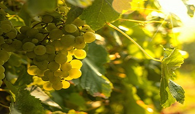
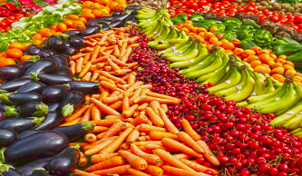
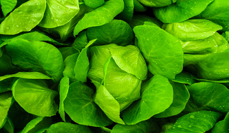

Vinhedo
A JF também é um grande produtor de uvas, com sua produção são criados os vinhos Merlot e Tannat, consumidos por todo o mundo.

Hortaliças
Produção de 10 toneladas de hortaliças por mês, 90% vendido para seu parceiro GPA.

Prêmio Cultivo Anual
Em 2019 a JF alimentos recebeu o prêmio de cultivo anual por suas perfeitas hortaliças.